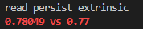
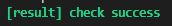

XXTRINSICLI Tool Defelop
background
Make a car end calibration parameter update tool that can adapt to various needs
Requirement document: XxtrinsicCli Software Deveopment Specification - wave 3 development - Docupedia (bosch.com)
Develop
Because there are more updates you want to support, it will appear bloated in the parameters when the function calls, so a configuration file is constructed. According to the configuration file
%YAML:1.0---data_path: "/home/inz2szh/zhangyichi/xper_stitch/update_yaml_xxtrinsics/dump/xxtrinsic/" # Whether to use the internal parameters in YAML to update the internal reference in Persist update_intrinsic: true # Whether to use the external parameters in YAML to update the external parameters in Persist update_extrinsic: true # Whether to extend the existing sensor SN number in Persist, otherwise the SN number will be set to 0use_origin_sn: true# regularize_sn: true # Whether to standardize the sensor SN (invalid position 0) in Persist, if it is not configured, the default is true# regularize_intrinsic: true # Whether to standardize the sensor internal parameters (invalid position 0) in Persist, if it is not configured, the default is true # 0: front_lidar# 1: side_view_camera_front_wide# 2: side_view_camera_front_tele# 3: side_view_camera_front_left# 4: side_view_camera_front_right# 5: side_view_camera_rear# 6: side_view_camera_rear_left# 7: side_view_camera_rear_right# 8: surround_view_camera_front# 9: surround_view_camera_rear# 10: surround_view_camera_left# 11: surround_view_camera_rightsensor_ids: [0,1,2 ] # List of sensor that need to be processed Self -test
Test_case_1 update inside and outside participation and keep SN unchanged
Use the pre -prepared YAML to update the internal and external participation of all sensors in the Persist, and keep the SN number the same (the non -effective position 0 in the SN number 0 in the default definition, see the table below)
|
|
Sn total length |
Effective position |
|
front_wide/front_tele |
20 |
18 |
|
front_left/front_right rear_left/rear_right rear |
8 |
|
|
nrcs_front/nrcs_rear nrcs_left/nrcs_right |
12 |
|
|
lidar |
16 |
The configuration file is as follows
# According to the actual situation, change data_path: "/home/inz2szh/zhangyichi/xper_stitch/update_yaml_xxtrinsics/new_dump/"update_intrinsic: trueupdate_extrinsic: trueuse_origin_sn: truesensor_ids: [0,1,2,3,4,5,6,7,8,9,10,11]Test results in different cases
|
|
Before running status |
Before running |
After running |
|
1 |
XXTRINSIC full empty |
||
|
2 |
Sensor_id in XXTRINSIC is all si_not_support The corresponding internal and external ginseng is 0 (the scene of the corresponding replacement) |
||
|
3 |
XXTRINSIC is the storage state after normal EOL |
TEST_CASE_2 updates the inside and outside participation and sets all the SN to 0
# According to the actual situation, change data_path: "/home/inz2szh/zhangyichi/xper_stitch/update_yaml_xxtrinsics/new_dump/"update_intrinsic: trueupdate_extrinsic: trueuse_origin_sn: falsesensor_ids: [0,1,2,3,4,5,6,7,8,9,10,11]Test_case_3 only update external parameters
# According to the actual situation, change data_path: "/home/inz2szh/zhangyichi/xper_stitch/update_yaml_xxtrinsics/new_dump/"update_intrinsic: falseupdate_extrinsic: trueuse_origin_sn: falsesensor_ids: [0,1,2,3,4,5,6,7,8,9,10,11]Automatic inspection tools on the table frame
Due to the participation of SN inside and outside, there are many parameters, and the results of human eye examination are time -consuming and laborious. Provide a set of tools for automation results.
The configuration file when transmitted to the update and the current read parameter read the update value will be automatically compared
Complete test method
Put the toolkit on the table: test_xxtrinsic_cli.zip
(1) Operation tool: Modify the configuration in YAML and call the interface for parameter update
(2) Perform parameter verification after update
chmod 777 auto_check_resultsh auto_check.shWhen the test fails
The value of the red word printing the verification fails, and immediately exit

When the verification is successful

Test case
|
|
|
Test steps |
expected outcome |
|
Write parameter after changing parts |
1 |
Put the internal and external ginseng in the Persist on the table, imitate the change of the change of the scene export LD_LIBRARY_PATH=$LD_LIBRARY_PATH:/opt/vrte/lib/:/opt/app/:/usr/local/lib3rd/usr/lib/:/asw/lib_w3/perception/ /opt/app/variantserver/bin/xcalib_cli -w/data/(/data/can be changed to any address without the calibration result yaml) |
Enter the current PERSIST's internal and external participation, all have been emptied |
|
2 |
The yaml file of the configuration parameter update tool is changed to the following configuration data_path: "Actual Internal and Examination Address" update_intrinsic: trueupdate_extrinsic: trueuse_origin_sn: truesensor_ids: [0,1]Calling tool And read parameters in persist /opt/app/variantServer/bin/xcalib_cli -r |
FRONT_LIDAR and FRONT_WIDE are written in Persist, Sn is all 0 |
|
|
3 |
Run 1 |
Enter the current PERSIST's internal and external participation, all have been emptied |
|
|
4 |
The yaml file of the configuration parameter update tool is changed to the following configuration data_path: "Actual Internal and Examination Address" update_intrinsic: trueupdate_extrinsic: trueuse_origin_sn: truesensor_ids: [0,1,2,3,4,5,6,7,8,9,10,11]Calling tool And read parameters in persist /opt/app/variantServer/bin/xcalib_cli -r |
The inside and outside of all sensors are written into the persist, SN is all 0 |
|
|
Normal update parameters |
5 |
Use the soft bottom tool to brush a portion of the inner and outer ginseng with the full SN number to the tablet. /opt/app/variantServer/bin/xcalib_cli -r |
Read the sensor parameter in Persist with SN number |
|
6 |
Run 2 |
FRONT_LIDAR and FRONT_WIDE are written in Persist, SN is unchanged |
|
|
7 |
Run 5 |
Read the sensor parameter in Persist with SN number |
|
|
8 |
Run 4 |
The inside and outside of all sensors are written into persist, SN is unchanged |
|
|
9 |
Run 5 |
Read the sensor parameter in Persist with SN number |
|
|
10 |
The yaml file of the configuration parameter update tool is changed to the following configuration data_path: "Actual Internal and Examination Address" update_intrinsic: trueupdate_extrinsic: trueuse_origin_sn: falsesensor_ids: [0,1,2,3,4,5,6,7,8,9,10,11]Calling tool And read parameters in persist /opt/app/variantServer/bin/xcalib_cli -r |
The inside and outside of all sensors are written into the persist, SN is all 0 |
|
|
Remark |
Calling TOOL (has been bald in red in the table above), manually compares the workload of inside and outside. You can use the inspection tool to automatically check. Just check whether the SN number SN is in line with the expected (keep/clear zero) |
||